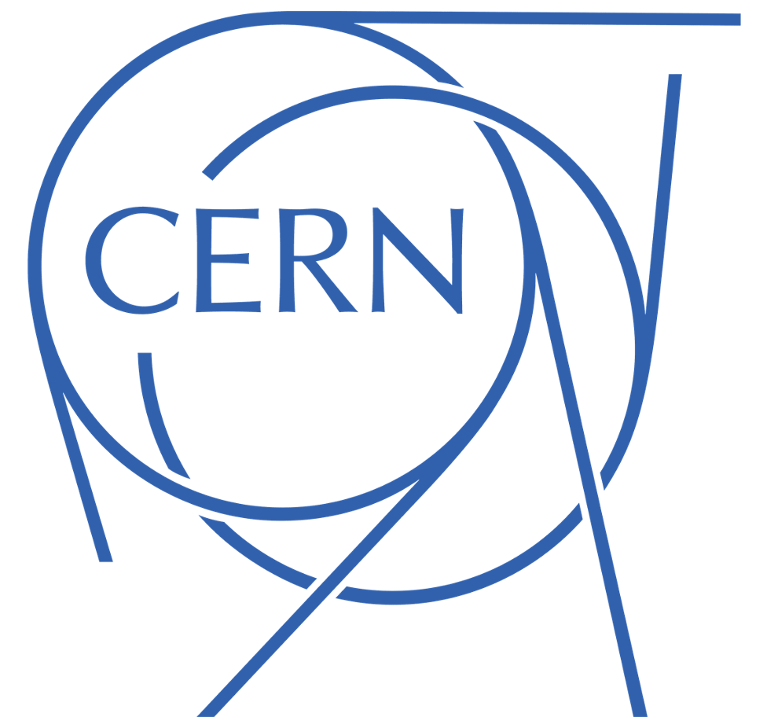
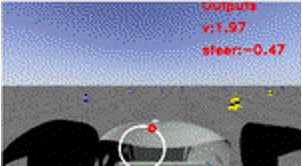

I am student in the final year of the Artificial Intelligence master's programme at the University of Amsterdam, where I am currently writing my thesis at ING Bank's Wholesale Advanced Analystics department. This research focusses on forecasting financial time-series data using Generative Pre-Trained Transformers.
Before my MSc, I completed a Bachelor's in Natural and Social Sciences, also at the University of Amsterdam, majoring in AI. I developed a strong interest in the mathematical, deep learning and computer vision courses. During the final months of this programme, I interned at international research organisation CERN, where I wrote my thesis on Hyperparameter Optimization for Jet Tagging.
Researched few-shot learning for image classification at FiveAI`s Oxford research group, which has close ties to the Torr Vision Group at Oxford University. The work I did together with Luca Bertinetto resulted in a contributed talk at the NeurIPS 2020 Meta Learning workshop, and a NeurIPS 2021 paper.
I worked on a project where we used drones equipped with RGB and infrared cameras to create orthomosaic maps of areas that contain geothermal lineaments. I developed an anomaly detection tool to automatically detect areas of geothermal importance using deep autoencoders and a one-class SVM. This work got published at the Stanford workshop on Geothermal Reservoir Engineering.

At the Large Hadron Collider in Geneva, Switzerland, protons are being accelerated and made to collide at speeds close to the speed of light; resulting into particle sprays known as jets. Determining which fundamental particle a jet originated from is known as jet tagging. During this thesis research, I attempt to increase performance of the state-of-the-art Particle Transformer model, used to classify jets for the CMS experiment. This is done by using a centralized machine learning platform launched by CERN in 2021, to perform a hyperparameter optimization study.
At Edinburgh University I was heavily involved in initiating and organising a series of panel discussions titled We Need to Talk About AI, where we invited insightful speakers to discuss some pressing societal issues around AI development. I was involved in three events which related to Data & Privacy, the Future of Work and Autonomous Weapons. Due to the success of the talk series it is now officially funded and endorsed by the Edinburgh Futures Institute.
While doing my AI MSc at the University of Edinburgh, I was part of the autonomous driving team at Edinburgh University Forumula Student, where I co-led the research team. We implemented a deep ConvNet to drive the car autonomously in ROS simulation using supervised learning.

July 2023 · Accepted as poster at NeurIPS 2023
[Re] Latent Space Smoothing For Individually Fair Representations
Fairness has become an increasingly more important topic within the AI community. Using recent advances in generative modelling and deep learning, researchers at DeepMind have proposed a novel representation learning method called LASSI. This model ensures that similar individuals are treated similarly, known as individual fairness. In this paper we aim to verify the original claims and extend the research by performing additional experiments to validate the robustness of LASSI.